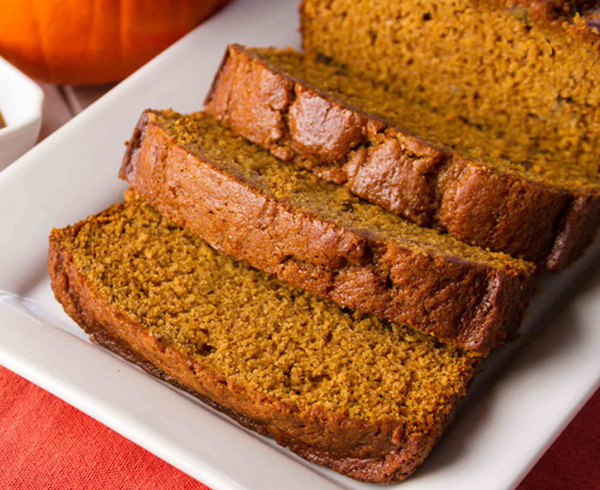

Pumpkin Bread

Description
This is a delicious recipe for pumpkin bread. It includes nutmeg, cloves, and cinnamon. I adapted it from a banana bread recipe, and
love the end result. I hope you love it too!
Ingredients
- 1 1/2 cups white sugar
- 1 cup light brown sugar
- 1 cup butter, melted
- 2 eggs
- 1 tablespoon vanilla extract
- 3 cups pumpkin puree
- 4 cups all-purpose
- 2 tablespoons ground cinnamon
- 1 tablespoon baking powder
- 1 tablespoon baking soda
- 1 tablespoon ground nutmeg
- 1/2 teaspoon ground cloves
- 1/2 teaspoon salt
Steps
- Preheat oven to 350 degrees F (175 degrees C).
- Mix white sugar, brown sugar, and melted butter together in a large bowl. Stir in
egg and vanilla extract; mix in pumpkin until thoroughly combined
- Whisk flour, cinnamon, baking powder, baking soda, nutmeg, cloves, and salt together in a separate bowl.
Mix flour mixture into pumpkin mixture until incorporated. Pour batter into three 5x9-inch loaf pans. Smooth batter evenly in each pan.
- Bake in the preheated oven until a toothpick inserted in middle of each loaf comes out clean, 40 to 50 minutes
Cook's Note
If you desire, you can combine 1 tablespoon white sugar and 1 teaspoon ground cinnamon
to sprinkle on top of the loaves before baking.